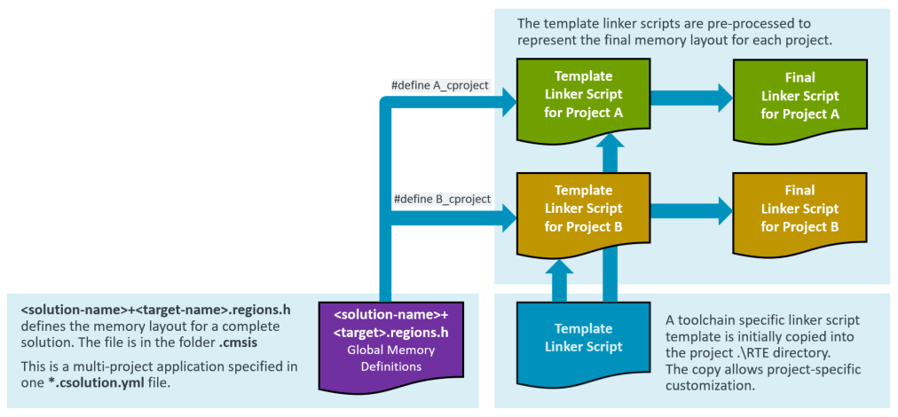
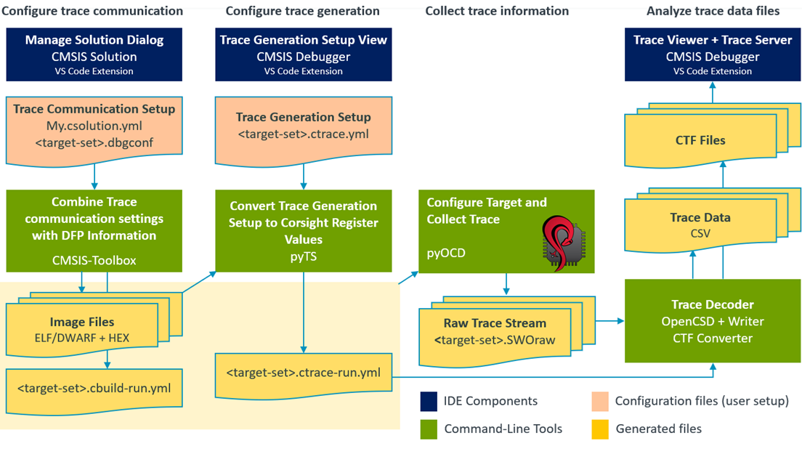

Experimental Features
Experimental features are implemented to iterate on new functionality. Experimental features have limited test coverage and the functionality may change in future versions of the CMSIS-Toolbox without further notice.
Resource Management
The CMSIS-Toolbox version 2.7 implements the experimental features for: - Resource Management
Hardening and finalizing of these features is planned for a later CMSIS-Toolbox version.
In a multi-processor or multi-project application, the target type describes the target hardware. A solution is a collection of related projects, and the context set defines the projects that are deployed to the target hardware. A project uses a subset of resources (called regions at linker level).
The linker script management is extended for multi-processor or multi-project applications with the following features:
-
When
resources:node is specified in one of the*.cproject.ymlor*.clayer.ymlfiles of a csolution project:- The file
.\cmsis\<solution-name>+<target-name>.regions.his generated. This file contains the global region settings of a solution for one target type. - The file
.\cmsis\<solution-name>+<target-name>.regions.hreplaces theregions_<device_or_board>.hthat is located in the directory./RTE/Device/<device>. Theregions_<device_or_board>.his no longer generated.
- The file
-
A
define: <project-name>_cprojectis always added to the linker script pre-processor (also when noresources:node is used).
The following picture explains the extended linker script management for multi-project applications.

resources:
The resources: node specifies the resources required by a project. It is used at the level of project:, setup:, or layer:. The resources: node is additive; when multiple resources: nodes specify the same region, the size is added.
Note
In a next iteration, the linker script may be generated by the CMSIS-Toolbox and features from uVision to allocate source modules to specific regions may get added. Therefore the resources: node is forward-looking in the way heap and stack are specified.
resources:
regions:
- region: __ROM0 # region name pre-defined in script template: __ROM0..3
size: 0x10000 # specifies region size
# name: ITCM_Flash - maps to physical memory name(s), if missing use PDSC default memory
# address: - absolution address of region; not in scope for 2.7
# startup: - locate startup/vectors to this region; not in scope for 2.7
# align: - alignment restrictions of the regions; not in scope for 2.7
- region: __RAM0 # region name pre-defined in script template: __RAM0..3
size: 0x8000 # specifies region size
heap: 0x2000 # heap size (only permitted region __RAM0)
stack: 0x4000 # stack size (only permitted in region __RAM0)
# name: - maps to physical memory name(s), if missing use PDSC default memory
# - SRAM1
# - SRAM2
# address: - absolution address of region; not in scope for 2.7
# align: - alignment restrictions of the regions; not in scope for 2.7
# sections: - potentially locate sections (requires linker script generation); not in scope for 2.7
# - .text.function
Example <solution-name>+<target-name>.regions.h file
#ifndef USBD_STM32F746G_DISCO_REGIONS_H
#define USBD_STM32F746G_DISCO_REGIONS_H
// *** DO NOT MODIFY THIS FILE! ***
//
// Generated by csolution 2.7.0 based on packs and csolution project resources
// Device Family Pack (DFP): Keil::STM32F7xx_DFP@3.0.0
// Board Support Pack (BSP): Keil::STM32F746G-DISCO_BSP@1.0.0
// Available Physical Memory Resources
// rx ROM: Name: ITCM_Flash (from DFP) BASE: 0x00200000 SIZE: 0x00100000
// rx ROM: Name: Flash (from DFP) BASE: 0x08000000 SIZE: 0x00100000 (default)
// rwx RAM: Name: DTCM (from DFP) BASE: 0x20000000 SIZE: 0x00010000
// rwx RAM: Name: SRAM1 (from DFP) BASE: 0x20010000 SIZE: 0x00020000 (default)
// rwx RAM: Name: SRAM2 (from DFP) BASE: 0x20030000 SIZE: 0x00020000 (default)
// rwx RAM: Name: BKP_SRAM (from DFP) BASE: 0x40024000 SIZE: 0x00001000
// rwx RAM: Name: ITCM (from DFP) BASE: 0x00000000 SIZE: 0x00004000
//--------------------------------------
#ifdef A_cproject
// Resources allocated in A.cproject.yml
#define __ROM0_BASE 0x08000000 /* Memory Name: Flash */
#define __ROM0_SIZE 0x00010000
#define __RAM0_BASE 0x20010000 /* Memory Name: SRAM1 */
#define __RAM0_SIZE 0x00008000
#define __STACK_SIZE 0x00004000
#define __HEAP_SIZE 0x00002000
#endif /* A_cproject */
//--------------------------------------
#ifdef B_cproject
// Resources allocated in B.cproject.yml
#define __ROM0_BASE 0x08010000 /* Memory Name: Flash */
#define __ROM0_SIZE 0x00030000
#define __RAM0_BASE 0x20018000 /* Memory Name: SRAM1+SRAM2 */
#define __RAM0_SIZE 0x00020000
#define __STACK_SIZE 0x00000200
#define __HEAP_SIZE 0x00000000
#endif /* B_cproject */
#endif /* USBD_STM32F746G_DISCO_REGIONS_H */
Question
- Should the
<solution-name>+<target-name>.regions.hfile contain also#definesymbols for the overall available memory, i.e. for a boot loader?
Server Mode
The csolution tool supports the command line argument rpc to initiate a server mode. With this mode rpc commands can be initiated. The first set of commands will be used by the VS Code CMSIS Solution extension to select components and packs for projects and layers.
Refer to github.com/Open-CMSIS-Pack/csolution-rpc for more information.
Zephyr Module Export
This is work in progress and the intended usage is initially for ML models generated for ExecuTorch. However the concept is flexible enough so that it can extend to other software components.
The CMSIS-Toolbox 2.14 allows to export a software layer (defined in *.clayer.yml) into a Zephyr module so that software delivered as CMSIS-Packs can be integrated in Zephyr builds.
A layer is converted to a Zephyr module with the standard Zephyr entry points:
zephyr/module.ymlto declare the module and connect it to CMake/Kconfig integration.Kconfigoptions that expose the available CMSIS-Pack components and allow enabling/disabling them viaCONFIG_...defines.CMakeLists.txt/sources.cmakethat map the selected CMSIS-Pack sources and include paths into the Zephyr build.- Generated compatibility headers (for example
RTE_Components.h/Pre_Include_Global.h) to bridge CMSIS component configuration into the consuming build.
The exported module can then be consumed by a Zephyr application by adding the module path to ZEPHYR_EXTRA_MODULES (or through a west manifest) and enabling the desired CONFIG_... symbols in prj.conf.
Example: the cmsis-to-zephyr-concept ml_inference example shows a minimal end-to-end flow: exporting a layer as a Zephyr module and consuming it from a Zephyr application.
Trace
Trace captures target execution data through SWO or trace port and from sources such as ETB, MTB, and Event Recorder. Trace is obtained with these steps:
- Configure trace communication (how trace leaves the MCU) with the
target-set:in*.csolution.yml(and optional settings in*.dbgconf). - Configure trace generation (what the MCU produces: ITM, DWT, etc.) with the
*.ctrace.ymlfile. - Collect trace information (debugger receives and records the stream) into raw data files.
- Analyze trace data files (host tools interpret the collected data files) and generate *.csv files and CTF files.
Note
<target-set>is the name of the target-set, for exampleSDS+AppKit-E8@HIL.- Trace does not include SEGGER RTT, SystemView, or STDIO UART output. These features use separate data output paths.
Directory and File Structure
Trace-related files are stored relative to the directory that contains the *.csolution.yml file.
| Directory or File | Created by | Description |
|---|---|---|
. |
User | Contains the *.csolution.yml project file. |
.cmsis/<target-set>.ctrace.yml |
CMSIS-Debugger | User trace intent and target-set specific trace capture configuration. |
.trace/<target-set>.ctrace-run.yml |
pyTS | Generated trace run information, including resolved symbols and register values. |
.trace/<target-set>.SWO.raw |
pyOCD | Raw trace data files, for example .SWO, MTB, or ER. |
.trace/<target-set>.SWO.csv |
TraceDecoder | CSV files that represent raw data + ctrace-refs |
.trace/<target-set>/ctf |
TraceDecoder | CTF files such as metadata, stream_0, and stream_1. |
TraceDecoder: OpenCSD + writer + CTF output
The .cmsis/<target-set>.ctrace.yml file configures the trace generation. It is created or updated by the user interface of the CMSIS-Debugger Trace View.
A CLI tool (pyTS) resolves symbol-based settings in *.ctrace.yml against the ELF/DWARF information of the active target-set and generates the register setup for the hardware configuration. The output is the .trace/<target-set>.ctrace-run.yml which is used by the debugger for register setup in hardware. During trace analysis the information of this file connects the raw trace data back to the *.ctrace.yml configuration.
Raw trace streams are stored as binary files, for example .trace/<target-set>.SWO.raw. The TraceDecoder CLI tool can post-process raw streams into CSV files and CTF format v1.8.3 for viewers and analysis tools.
Name Conventions
Location
Locations can be symbols or a plain numeric addresses. An additional project or path to an image file may be specified.
| Location Form | Description |
|---|---|
symbol |
Finds matching symbols in all available symbol files. |
"sourcefile"::symbol |
Finds matching symbols in a source file across all available symbol files. |
project\|symbol |
Finds matching symbols in symbol files from a specific project. |
project\|"sourcefile"::symbol |
Finds matching symbols in a source file from a specific project. |
file-path\|symbol |
Finds matching symbols in symbol files from a specific image file. |
file-path\|"sourcefile"::symbol |
Finds matching symbols in a source file from a specific image file. |
ToDo: examples
References
References identify a node in the ctrace.yml that generated information in ctrace-run.yml. These nodes are used for diagnostics and for linking trace analysis results back to the trace setup.
Examples:
ctrace-ref: <pname>/data#2 # refers to pname section, `data:` node, list node #2
ctrace-ref: data#2 # `data:` node, list node #2
ctrace-ref: instruction:start#0 # `instruction:` node, `start:` node, list node #0
Tools and Extensions
The trace workflow is split across the command-line tools and and VS Code extensions as shown below.

| Tool or Extension | Input | Output | Description |
|---|---|---|---|
| Arm CMSIS Solution | *.csolution.yml, optional .cmsis/*.dbgconf |
*.cbuild-run.yml |
Generates the run and debug information consumed by debuggers. |
| Arm CMSIS Debugger Trace Generation Setup View |
.cmsis/*.ctrace.yml |
Updated .cmsis/*.ctrace.yml |
Configures trace capture. |
| pyTS symbol mapper | .cmsis/*.ctrace.yml, ELF/DWARF symbols |
.trace/*.ctrace-run.yml |
Resolves symbols and generates Corsight register valuesworkflows. |
| pyOCD | *.cbuild-run.yml, .trace/*.ctrace-run.yml |
Raw trace data files in .trace/ |
Programs trace registers and captures trace streams during the debug session. |
| Trace Decoder | Raw trace data files, .trace/*.ctrace.run.yml |
CSV, CTF files, Trace Compass XML Analysis file | Generates CSV files (human readable) and CTF files |
| Trace Viewer for VSCode and VS Code Trace Server |
CTF files, Trace Compass XML Analysis file | Trace viewer panes | Visualizes the CTF output in VS Code. |
Interactive Debug Workflow:
It is possible to change the Trace Generation Setup during debugging. For this workflow:
- pyTS generates a new
*.ctrace-run.ymlfile. - pyOCD reloads this
*.ctrace-run.ymlfile and deletes existing Raw Trace Stream files.
CI Workflow:
CI requires a prepared .cmsis/<target-set>.ctrace.yml file. This file is may be under source control or maintained manually.
Configuration Files
Trace setup is split between target infrastructure configuration and capture configuration.
| Configuration File | Description |
|---|---|
*.csolution.yml |
Selects the target-set and debug adapter. It may also reference target-set specific debugger configuration files. |
.cmsis/*.dbgconf |
Optional target-set specific debugger configuration, for example trace clock, trace pins, ETB setup, and related hardware setup. |
.cmsis/<target-set>.ctrace.yml |
User-authored trace capture configuration. This file defines which data, events, ITM channels, PC samples, or instruction trace streams are enabled. |
.trace/<target-set>.ctrace-run.yml |
Generated trace run configuration. This file contains resolved symbols and ordered register accesses for pyOCD or other debug tools. |
The trace capture configuration is written to target trace resources such as DWT, ITM, ETM, MTB, or PMU registers. The generated register accesses are loaded by pyOCD when the debug session starts.
In a later step, a preprocessing tool may generate .trace/README.md with setup instructions and code snippets that can be inserted in the application code.
File Structure of *.ctrace.yml
The *.ctrace.yml file starts with the node ctrace: and contains the trace capture settings for one target-set.
ctrace: |
Content | |
|---|---|---|
created-by: |
Optional | Tool and version that created or last updated the file. |
setup: |
Required | Setup for each processor |
setup: |
Content | |
|---|---|---|
- pname: |
Optional | Section applies to a processor name (required for multi-processor systems) |
disable: |
Optional | When set, this list node is ignored; useful for testing. |
timestamps: |
Optional | Enables timestamps in the emitted trace streams. |
timesync: |
Optional | Enables time synchronization between trace streams. |
data: |
Optional | DWT data trace configuration. |
exceptions: |
Optional | DWT exception trace configuration. |
events: |
Optional | DWT or PMU event trace configuration. |
itm: |
Optional | ITM channel configuration. |
instructions: |
Future | ETB or MTB instruction trace configuration. |
pcsampling: |
Future | DWT PC sampling configuration. |
synchronization: |
Optional | Trace synchronization packet period configuration. |
tracehalt: |
Future | Trace sink or formatter halt trigger configuration. |
Example:
ctrace:
created-by: CMSIS-Debugger v1.4.0
setup:
- pname:
# disable: # disables trace without need to remove settings
timestamps:
timesync:
data:
- location: mysimple
- location: \\App\0x20001000
access: readwrite
size: 0x100
output: PC
- location: App|"main.c"::sample_counter
access: R
output: PC
match:
value: 0x00001234
size: 4
exceptions:
events:
- event: CPICNT
- event: LSUCNT
itm:
enable: 0x0000000F
privileged: 0x0
timestamps:
When timestamps: is present, timestamp generation is enabled in the trace stream. ITM uses local timestamps with a synchronous timestamp source. ETM uses the cycle counter.
timestamps: |
Content | |
|---|---|---|
itm-prescaler: |
Optional | ITM timestamp prescaler: 1 (default), 4, 16, 64. |
timesync:
When timesync: is present, time synchronization between streams is enabled, for example between ITM and ETM by global timestamps.
data:
The data: node configures DWT data trace. DWT comparator resources are limited and shared with data access breakpoints, trigger conditions, and trace start/stop logic.
data: |
Content | |
|---|---|---|
- location: |
Required | Symbol or numeric address location to trace. |
access: |
Optional | Access type: W, R, or RW. Default: W. |
size: |
Optional | Number of bytes in the traced range. Default: sizeof(symbol), 4 for numeric addresses. |
pname: |
Optional | Processor name, required for numeric addresses in multi-processor systems. |
output: |
Optional | Trace output mode (see table below). Default: value. |
match: |
Optional | Value match condition. When present, trace is emitted only for matching accesses. |
value: |
Required | Value to match. |
size: |
Optional | Number of bytes to compare. Allowed values: 1, 2, 4. Default: 4. |
output: |
Description |
|---|---|
value |
Emits the value of the access. |
address |
Emits the address offset. This is useful when tracing an address range. |
PC |
Emits the PC value that caused the access. |
match |
Emits only the comparator ID of a match. This requires Armv8-M and saves trace bandwidth. |
PC+value |
Emits PC and value. |
address+value |
Emits address offset and value. |
PC+address |
Emits PC and address offset. This requires Armv8-M. |
Note
size: values greater than 4 may require two DWT comparators, depending on the DWT architecture. A match: condition can also require two DWT comparators.
exceptions:
The exceptions: node enables DWT exception trace. This does not enable ETM exception trace.
events:
The events: node enables DWT or PMU event trace for all processors or for a specific processor.
events: |
Content | |
|---|---|---|
- event: |
Required | Event selector. |
Supported DWT event selectors include CYCCNT, CPICNT, EXCCNT, SLEEPCNT, LSUCNT, and FOLDCNT.
PMU events may be added when supported by the target. They are emitted when one or more PMU counters with index 0..7 have an 8-bit overflow.
Example:
events:
- event: CPICNT
- event: FOLDCNT
- event: LSUCNT
itm:
The itm: node enables ITM channels.
itm: |
Content | |
|---|---|---|
- enable: |
Required | ITM channel bit mask. |
privileged: |
Optional | Privileged access only mask by blocks of eight channels. Default: 0. |
Each bit in enable: represents one ITM channel.
Note
ITM channel 0 is often used for printf output. This output should be routed to an output window or debug console instead of the trace analysis components.
pcsampling:
The pcsampling: node enables DWT PC sampling for selected processors.
pcsampling: |
Content | |
|---|---|---|
- period: |
Optional | Sampling period in CPU cycles. |
Supported values for DWT PC sampling period: are 0 (off), 64*1, 64*2, ... , 64*16, 1024*1, 1024*2, ... , and 1024*16. Default: 0.
synchronization:
The synchronization: node overrides component-specific synchronization packet frequencies.
synchronization: |
Content | |
|---|---|---|
- period: |
Required | Synchronization period in the form <component>\<period>. |
| Component | Supported Values |
|---|---|
DWT |
0 (off), 16M, 64M, 256M processor cycles. Default: 256M. |
ETM |
0 (off), 256, 512, 1k, 2k, ... , or 512k, 1M cycles/bytes. Default 1k. |
Note
k=2^10, M=2^20
Example:
synchronization:
- period: DWT\16M
- period: ETM\1k
instructions:
The instructions: node is reserved for ETB and MTB instruction trace. It is not required for the initial implementation.
instructions: |
Content | |
|---|---|---|
start: |
Optional | Conditions that start instruction trace. |
stop: |
Optional | Conditions that stop instruction trace. |
start: and stop: contain condition entries. These entries define when instruction trace starts or stops; they do not define trace output.
start: or stop: |
Content | |
|---|---|---|
- location: |
Required | Code symbol, data symbol, or numeric address location used as the trace condition. |
access: |
Optional | Access type: X, R, W, or RW. |
size: |
Optional | Number of bytes in the condition range. Defaults to sizeof(symbol) for symbols and 4 for numeric addresses. |
match: |
Optional | Value match condition for data symbols or numeric addresses. |
value: |
Required | Value to match. |
size: |
Optional | Number of bytes to compare. Allowed values: 1, 2, 4. |
The default access: is X for code symbols and W for data symbols or numeric addresses.
ToDo: do not understand this: Multiple conditions may be supported as an AND combination when they affect the same ETM or MTB.
tracehalt:
The tracehalt: node is reserved for conditions that halt a trace sink or formatter by trace trigger. It affects all trace streams that use the sink, not only ETM instruction trace.
tracehalt: |
Content | |
|---|---|---|
- combine: |
Optional | Boolean operator for complex halt trigger conditions: AND (default) or OR. |
location: |
Optional | Halt trigger location. ToDo: Details are still open. |
File Structure of *.ctrace-run.yml
The *.ctrace-run.yml file starts with the node ctrace-run:. It is generated from *.ctrace.yml, *.cbuild-run.yml, and ELF/DWARF symbol information. This file is a generated artifact and should not be edited manually.
ctrace-run: |
Content | |
|---|---|---|
generated-by: |
Optional | Tool and version that generated the file. |
ctrace-refs: |
Required | List of references in the *.ctrace.yml file. |
ctrace-refs: |
Content | |
|---|---|---|
- ctrace-ref: |
Required | Reference to a node in the *.ctrace.yml file that generated the register setup |
info: |
Optional | Additional information (i.e. alignment extension, etc.) |
warning: |
Optional | Warning message |
error: |
Optional | Error message when setup cannot be completed |
symbol-file: |
Optional | Absolute path to the symbol file used in this reference |
symbol-address: |
Optional | Address of the symbol |
atp-id: |
Optional | ID in raw trace that links back to this entry |
regs: |
Optional | Register setup |
regs: |
Content | |
|---|---|---|
- name: |
Required | Symbolic name of the register |
value: |
Required | Value to write in this register |
mask: |
Optional | Bit mask for value write (default: 0xFFFFFFFF) |
Example:
ctrace-run:
generated-by: pyTS v0.0
ctrace-refs:
- ctrace-ref: core0/itm
pname: <core0>
symbol-file: <symbol file used>
symbol-address: address of symbol
atp-id: 1
regs:
- name: ITM_TER0
value: 0xFFFFFFFF
# mask
- name:
value:
- ctrace-ref: data#0
error | warning | info : cannot find symbol
- ctrace-ref: data#1
regs:
- name: DWT_COMP0
value: 1
- name: DWT_COMP1
value: 2
Register Accesses
The ctrace-run.yml file contains the register values that are required for trace generation. It does not include enable sequences required by the Arm processor to access these registers. The debugger (pyOCD) has knowledge about the arichtectural defined trace components (listed in the table below) and therefore generates the right sequences, potentially with timeouts.
| Trace Component | Base Address | Description |
|---|---|---|
ITM |
0xE0000000 |
Instrumentation Trace Macrocell. |
DWT |
0xE0001000 |
Data Watchpoint and Trace unit. |
PMU |
0xE0003000 |
Performance Monitoring Unit. |
ETM |
0xE0041000 |
Embedded Trace Macrocell. |
The ctrace-ref: nodes references the trace generation configuration in ctrace.yml and contain register values that represents the references setup.
A single-core system has no pname: value; a multi-processor always includes a pname: value in the ctrace-ref: node.
ToDo Jens: ware the system wide settings? How are the represented? What trace component is configured with such settings?
- Entries in *.ctrace.yml without processor scope are expanded to each processor that supports the requested trace feature.
Initial Implementation
The initial implementation focuses on pyOCD with SWO UART and interactive operation in CMSIS-Debugger.
Subsequent releases may extend this initial solution to:
- Instruction trace using ETB or MTB.
- Event Recorder.
- CI workflow automation.
Remaining Design Questions
- Cross-trigger functionality will be represented later (potentially in
*.ctrace.yml) - "Trace and Live View" will be renamed to "Target Monitor" with the sub-sections "Live Watch" and "Trace"
- How should trace configuration and captured trace information be exposed in the user interface?
- How are PMU events configured (what is captured with the PMU)?
Out-of-Scope
- SEGGER RTT, SystemView, and STDIO UART output are not part of trace capture and use separate output paths.
- ITM channel 0
printfoutput should not be routed to trace analysis components. It should be shown in an output window or debug console.